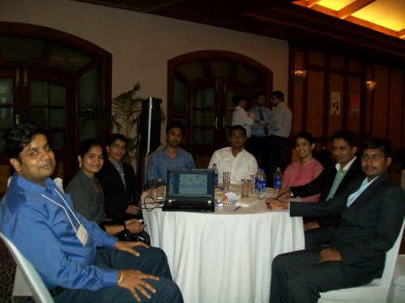

|
Corporate Events Hosted/Participated
Develothon 2010 - a Road show for Developer Community Organized by IBM Technologies on 8th April 2010 @ KLUniversity
KLUniversity has organized ‘Develothon 2010’ a programme by IBM technologies aimed at helping the software developer community in India develop skills in newer technology areas and integrates with its developer Works forum, known for extensive skill coverage and software evangelization on 8th April 2010 at peacock hall of KLUniversity campus.
The objective of the road show is to realize growth, innovation and to retain the best people and to achieve that learning and developing skills is an essential engine of productivity and competitive advantage. The Programme included technical briefing sessions covering topics like cloud computing, information agenda, business performance management (BPM), business intelligence (BI), social networking collaboration and service oriented architecture (SOA).
The programme was inaugurated by Sri K Raja Sekhar Professor Incharge IBM Center of Excellence who talked about the Developer works and appealed the students for their attentiveness needed to improve them selves towards never finished novel technology.
Sri Himanshu Goyal, Country manager IBM Academic Initiative, IBM was the main speaker of the programme and delivered wonderful lecture on theme of the programme. Sri Dhirender Nirwani Digital Specialist Developer Works talked about various concepts related to Cloud computing, business intelligence and encouraged the students for their energetic responses with prizes.
Idea-IBM innovation summit 2012
Idea-IBM has a partnership of worth $12 billion on IT related services for
telecommunication sector. The IBM-Idea innovation summit aims at bringing the
best professionals in industries to focus in increasing the customer usage of 3G
services and bringing up innovative mobile applications that are helpful to the
Indian diverse population. The student team is the judge of the summit.
Event details:
Name: Idea-IBM
innovation summit
Date: 9th Feb
to 12th Feb 2012
Place: Taj's
Zuri white sands casino and resort, Goa
Key event participants:
Mr. Jayson- Head of IBM, telecommunications
Mr. Sudanshu Rawat- Vice president, IBM India
Mr. Rama krishna- Chief operating
officer(coo), Idea cellular INDIA
Mr.Tejasvi Bishnoi- Asst. vice president of
IT, Idea cellular INDIA
Mr. Deepak Rao- Asst. vice president of
marketing, Idea cellular INDIA
Top-6 students selected by IBM academic
Initiative team from engineering colleges across India
Selection Process:
A telephony interview is conducted by IBM team for the top 40 nominations
from the IBM software center of excellence colleges. The result was in favor of
KL University at the first choice by picking L.Karthick (L9CS353) the IBM
student ambassador for KL University and for his role as the champion of the The
Great Mind Challenge (TGMC) -2010. The interview is based on mobile usage
patterns, communication skills and basic technical knowledge related to
telecommunications.
Event happenings:
A meeting with Mr.Jayson, the leader of the summit
is held with the student team. The team is divided into 3 members each, one team
headed by Mr.L.Karthick of KL University and the other by Miss.S. Geeta lakshmi
of MLRIT, Hyderabad. The student team is introduced to the delegates from IBM
and Idea cellular. A question and answer hour is organized where the student
team are asked about their mobile usage patterns of Idea cellular by all the key
event personalities. The 3G services usage patterns are mostly enquired and also
the mobile tariff rates are discussed. The student team is given the opportunity
to decide the tariff for a "dream tariff document" of Idea cellular. The IBM
team enquired about the mobile application development and ideas for new
innovative mobile applications.
The next part of the hour the team of Mr.Karthick is asked to judge the best
innovative idea for introducing mobile applications to Indian market. The team
gave highest importance for a customized set of mobile applications to be
provided by Mobile operator. The customized solution is meant for different
kinds of users. Example, women will have mobile applications for grocery
purchases, movie reviews, location services and life style related applications.
The next best innovative idea chosen by the team is to have an android like
market place for mobile applications provided by the cellphone operator himself.
The reasons given by the student team for selecting the ideas are read by the
leader of the summit Mr.Jayson. The reasons given by students are appreciated by
the summit delegates. The students are gifted with mementos for their good job
by Idea and IBM leaders.
Good Results for KLU after the summit:
The KL University student Mr. L.karthick is offered employee reference for
a placement in IDEA cellular and IBM. The most important happening for KLU is
that Idea cellular limited Chief operating officer (COO) Sri. Rama Krishna
assured for a possible on-campus recruitment drive for engineering graduates in
Broadband services at KLU campus in the coming years.

|